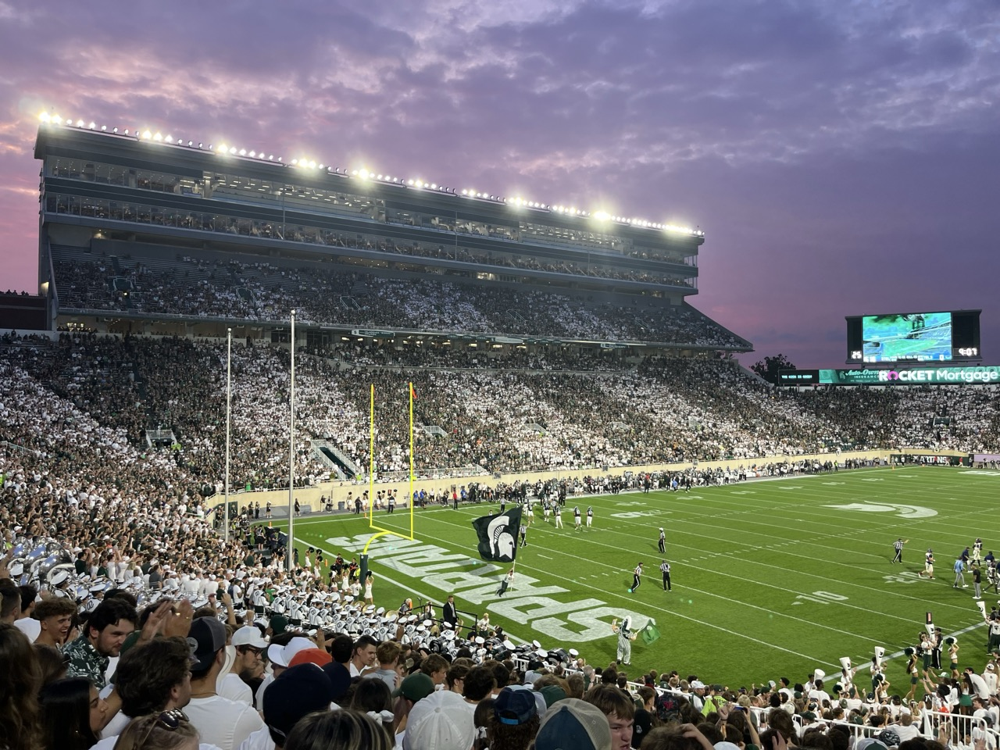

Experiencing student life in the United States is an exciting journey filled with diverse opportunities and cultures. You'll meet people from various backgrounds, enhancing your global perspective and enriching your personal growth. University campuses in the United States tend to be significantly more diverse than many surrounding peri-urban or rural areas. Over 1 million international students study abroad in the United States annually. Learn more about international student statistics. Here's what you can look forward to:
Academic Environment
Universities in the United States offer a dynamic and interactive academic environment that encourages critical thinking and active participation. Students engage in discussions, collaborate on group projects, and benefit from access to state-of-the-art facilities.

Campus Culture
Campus life in the United States is vibrant and welcoming, offering opportunities to build community beyond classroom and research settings. Graduate students can join a wide range of cultural groups, professional organizations, and recreational activities. Whether you are interested in sports, arts, volunteer work, or academic societies, you will find opportunities to connect with others, develop new skills, and enrich your overall university experience. There are also many professional development opportunities that universities offer.

Housing
- Students can choose between on-campus housing (if available for graduate students) or off-campus housing. Living on campus provides a sense of community and easy access to university resources.
- Regardless of where you live, you will find ways to stay connected with the academic community.
Transportation
- Public transportation is limited in many U.S. university towns (unlike in Japan and except in major cities such as New York City and Chicago).
- Most international students choose to live near campus or arrange their own means of transportation once they settle in.
- Universities typically offer a variety of resources such as housing support, campus shuttles, bicycle programs, and orientation guidance to help students navigate and adapt to local transportation options.
Support Services
Universities offer support services, including academic advising, mental health counseling, and career services, to help you succeed both academically and personally.

Work Opportunities
- International students may have the opportunity to work on campus or participate in internships, providing practical experience in their field of study.
- International offices offer student resources, providing consultation on possible employment options and any visa-related employment restrictions.
Training Opportunities
294,253 students in 2024-2025 engaged in Optional Practical Training (OPT), a post-study work opportunity tied to student visas. Read the Open Doors 2025 report.
Degree Recognition
77% of international students agreed that studying in the U.S. helped them find good jobs and successful career outcomes. Learn more about career outcomes.
Excited about campus life? Explore Japanese study centers across U.S. universities and connect with your community!
Japan Centers →